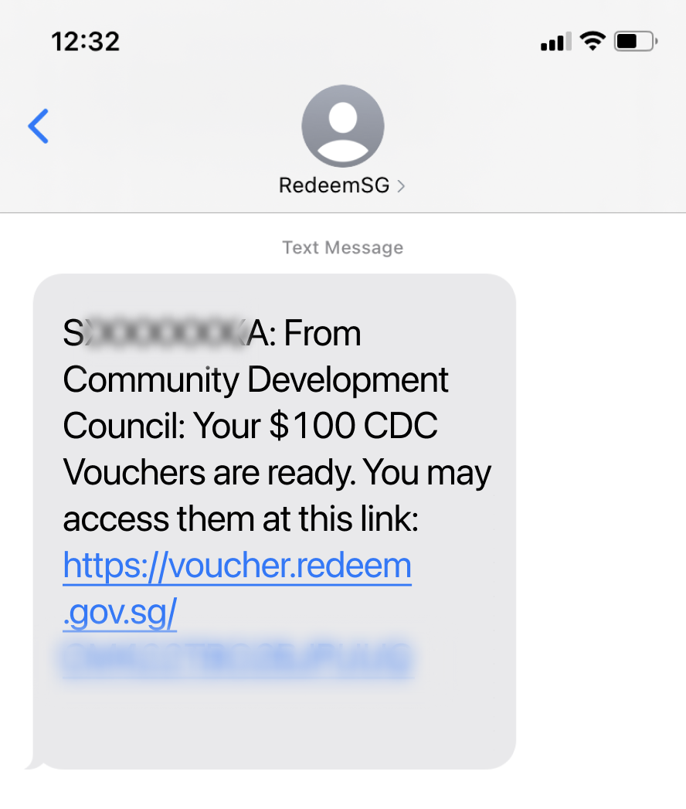
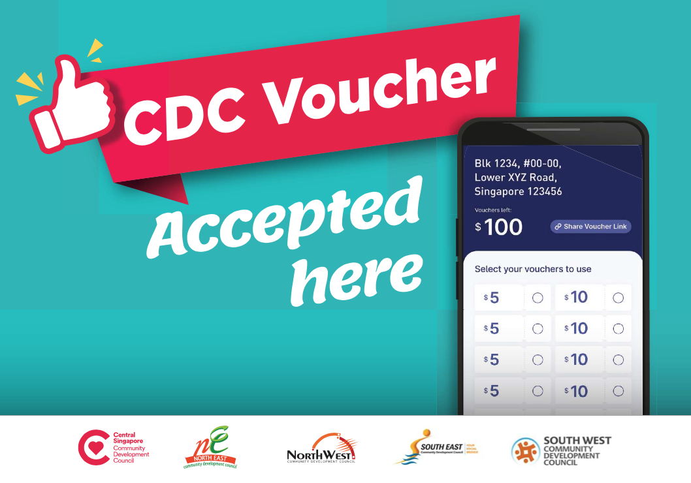
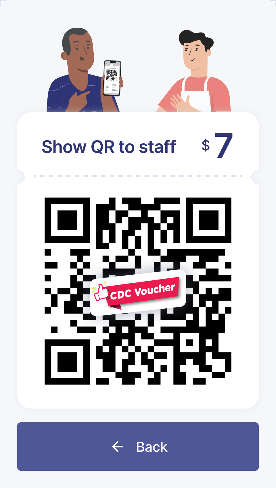
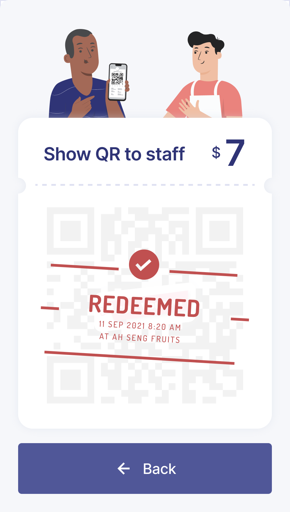
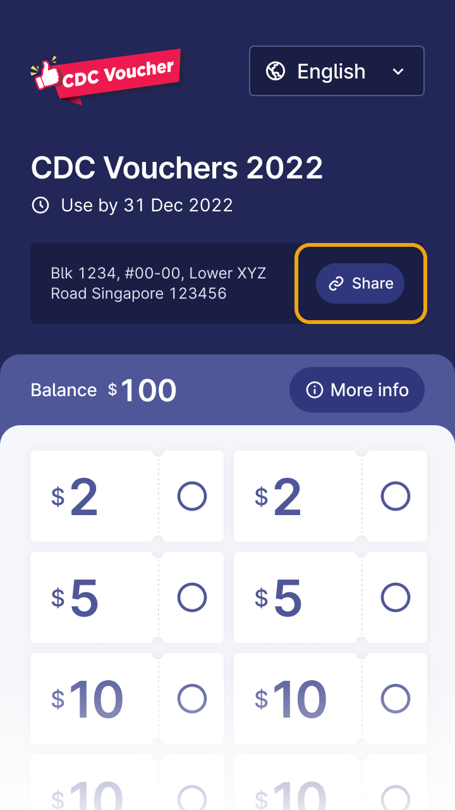
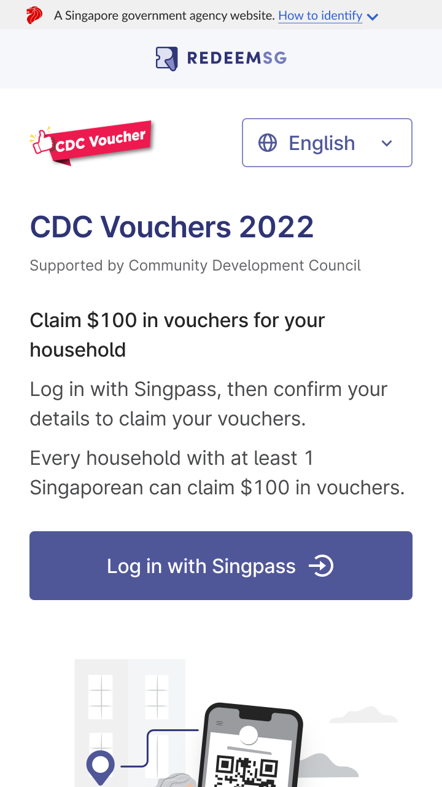
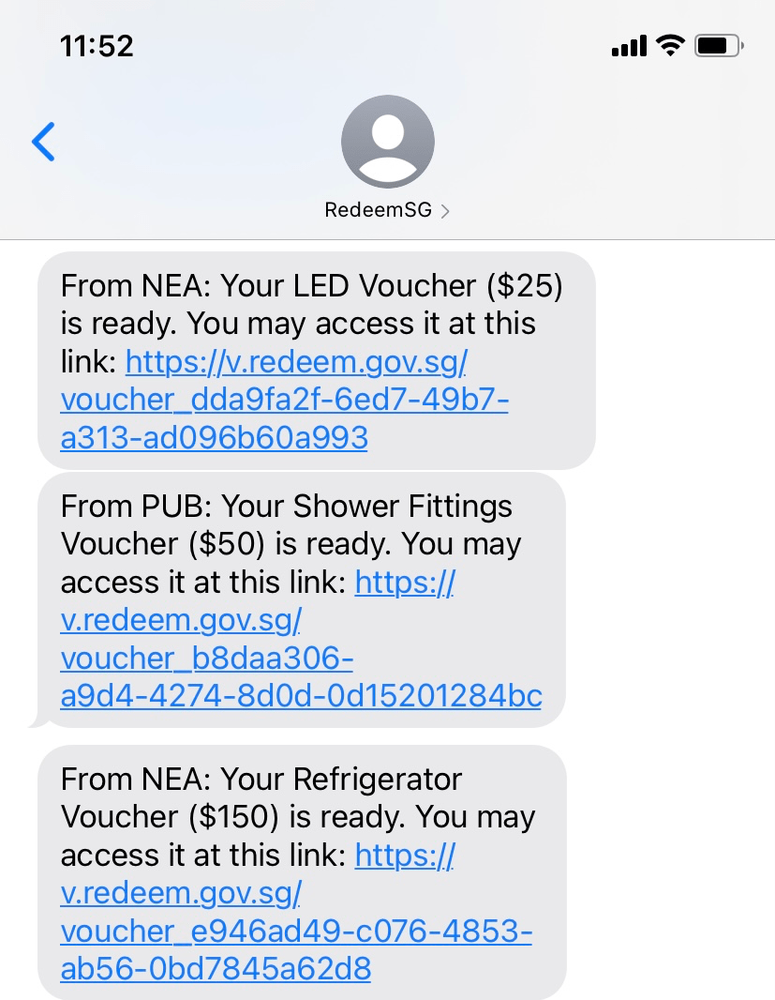
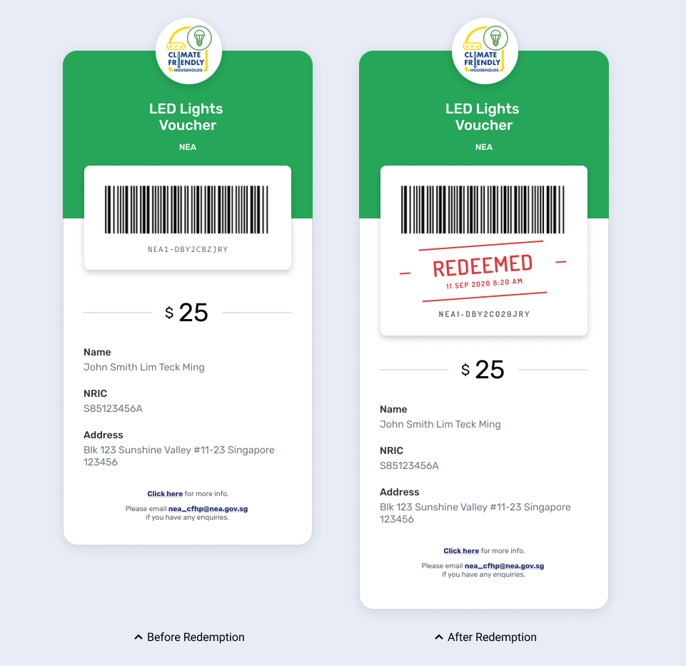

A Singapore Government Website
A Singapore Government Website
For help related to claiming vouchers, payouts, and more.
RedeemSG is a voucher system for the Singapore Government. It helps to digitize vouchers and redemption tracking, thereby eliminating the manual work of collecting vouchers and digitizing records. This comprises of:
Any government agency and its affiliate partners can use RedeemSG to create, send and track vouchers. We also assess requests from charities on a case by case basis. To create and gain access to a campaign, or to gain access to the portal, please contact us at feedback@redeem.gov.sg.
For Government agencies who wish to onboard, we are currently accepting new use cases launching from May 2022 onwards.
We are currently also accepting merchants to be onboarded to the CDC Vouchers campaign. Merchants can indicate interest here.
If you are a voucher applicant/ recipient, you will need to apply for vouchers at the relevant campaign organizer sign up page.
Currently we are only onboarding merchants for the CDC Vouchers campaign. Please refer to the CDC Vouchers - Merchants page here for more info.
We will only be able to explore integration with merchants from May 2022 onwards.
For Recipients and Merchants, please refer to the relevant campaign page that you are participating in below.
Please visit the following link go.gov.sg/cdcv to claim your CDC Voucher.
The voucher link will be sent to your verified mobile number.
(Please note that the masked NRIC portion and exact voucher link URL blurred in white may vary.)
You can then spend the voucher by selecting the amount you want to use.

Then, you can present the voucher QR at participating merchants that can be identified by the CDC Voucher decal.
Once the merchant scans the voucher, the voucher will update in real time to show it is redeemed.
 There is no need to download a mobile app to claim the voucher
You may find out more on how to go about redeeming the voucher at the following website: vouchers.cdc.gov.sg/residents/info
All Singaporean households are eligible for the scheme. Each household can claim $100 in CDC vouchers that can be spent at participating merchants.
(As the intent of this current tranche is to foster a sense of solidarity amongst Singaporeans and support heartland merchants and hawkers, the eligibility criteria for this tranche is different from previous CDC voucher tranches where only some households were eligible for the vouchers).
You can redeem the CDC voucher at any of the participating merchants that can be identified by this particular CDC Voucher Decal.
You can redeem the CDC voucher at any of the participating merchants that can be identified by this particular CDC Voucher Decal.
The campaign runs from 13 Dec 2021 to 31 Dec 2022.
Yes. Help will be available at Community Centres/Clubs (CCs) for those without smartphones, data plan or who need to set up their Singpass or reset their Singpass password during the CDC Vouchers Scheme duration. Seniors without household members to help them to claim their CDC vouchers, as well as the digitally less savvy, will be given priority when seeking help at CCs. In appropriate cases, there will also be the option of printing hardcopy vouchers at the CCs.
In addition, SG Digital Community hubs found in selected CCs and libraries island-wide will be available to help digitally less-savvy residents claim their digital vouchers. The Silver Generation Office Ambassadors will also assist with any queries or request for assistance during their house visits to seniors.
If you have forgotten your Singpass password, you may reset your password online here or head to a nearby CC who will be able to assist you with resetting your password.
Please check if your unique voucher link starts with the following prefix "https://voucher.redeem.gov.sg. The sender name is “RedeemSG”. Please do not trust vouchers starting with other prefixes.
A typical SMS from RedeemSG will look something like this:
(Please note that the masked NRIC portion and exact voucher link URL blurred in white may vary)
If you are unsure of whether the voucher is from RedeemSG and the Singapore Government, please check with PA's hotline 6225 5322 or email feedback@redeem.gov.sg.
Yes, the vouchers can be shared with your family members.
You can share your voucher by:
Using the 'Share my Vouchers/ button to copy the unique voucher link and paste into any preferred messaging apps e.g. SMS/ Whatsapp/ Telegram.
To retrieve the vouchers again, please visit the sign up link go.gov.sg/cdcv and login with Singpass again. You will be able to get your vouchers sent to you via SMS. This sign up link is also shown on the letter sent to your household.
You may redeem your voucher at any participating merchants that can be identified with the CDC Vouchers decal.
You may redeem your voucher by selecting the amount you want to use and presenting it at a participating merchant that can be identified with the CDC Vouchers Decal.
You can check how much you have left by visiting the voucher link sent to you via SMS.
Once your voucher QR is scanned by participating merchants, the voucher will automatically refresh and update to show it is redeemed at a particular stall in a few seconds- see below.
If the voucher value is more than the purchase value, any unused amount / remaining value of the voucher will not be refunded.
CDCs have, in partnership with Open Government Products, GovTech digitized the vouchers in response to suggestions of hawkers and heartland merchants to have faster pay-outs, accurate tracking of transactions and reduce the need for them to collect, count and hand over paper vouchers. Residents also no longer need to visit the CC to collect their paper vouchers, and thereby enjoy greater convenience.
After taking in feedback from hawkers, heartland merchants and residents and iterating on the flow based on several trials with them since April 2021, we have developed this improved flow which involves vouchers being issued and tracked digitally as the primary mode. Equipped with a mobile app to easily accept vouchers, merchants will enjoy faster payouts, accurate tracking of transactions and no longer need to collect, count and hand over paper vouchers. With the digital means to claim and vouchers, residents no longer need to come down to the CC to collect their paper vouchers, promoting social distancing and public health in light of COVID-19.
To ensure no resident is left behind, residents claiming both digital or physical vouchers can similarly spend their vouchers at the merchants by showing the QR code for the merchant to scan.
For those who need help claiming their e-vouchers, they may seek the help of a household member who is digitally more savvy to assist them in claiming the voucher as the voucher is assigned to the household. If the less digitally savvy need help, they can visit the CC where Singpass set up / reset counters are set up and there are also staff who can assist them to claim or print physical vouchers.
This is the first time CDC vouchers are digital (all previous tranches of CDC Vouchers have been paper vouchers). Open Government Products (GovTech) worked closely with CDC to identify the key problems digital vouchers aimed to tackle, and conducted 8 on-the-ground trials with real merchants and residents to ensure the final solution is intuitive, inclusive, and easy to use.
From each trial, we listened to feedback from the residents and merchants to improve the user experience for them respectively.
CDCs in partnership with Open Government Products, GovTech, had previously tested the model in which the customer scans the merchant's QR. While this is technically possible, we identified it would come with the following drawbacks:
To ensure that the digital system caters to both digitally savvy and less digitally savvy residents, we have designed the digital solution such that merchants and residents will have the same workflow regardless of whether digital or paper is used -- residents will present the digital/ paper voucher, and merchants will scan digital/paper vouchers.
After consultations with merchants, we have determined that the $2, $5 and $10 were the 3 best preferred denominations to cater to a range of purchases - e.g. to cover purchases of both drinks and food at the hawkers and other items/ services at heartland shops (e.g. groceries, haircuts).
The vouchers are in fixed denominations to provide the ease of reconciliation for merchants and reduce the chance for errors to occur when consumers key in the amount. Having it in fixed denominations also takes reference from the terms of use for vouchers by other commonly used vouchers - e.g. NTUC vouchers, grab vouchers.
CDC digital vouchers are designed to be spent specifically at heartland merchants and hawkers to support them as their businesses were negatively affected by the pandemic.
Please refer to this link for the process.
Please check if your voucher starts with the following prefix https://v.redeem.gov.sg/. The sender name is “RedeemSG”. Please do not trust vouchers starting with other prefixes.
For reference, typical SMS from RedeemSG will look something like this:
Below are samples of the light, fridge and water fittings vouchers.
Please visit this link to see the list of merchants.
Vouchers cannot be used again once they are redeemed.
Please contact nea_cfhp@nea.gov.sg for help. We will be able to void the voucher that is being resold.
Please check that you have a working internet connection. If the voucher still does not work, please contact nea_cfhp@nea.gov.sg for help.